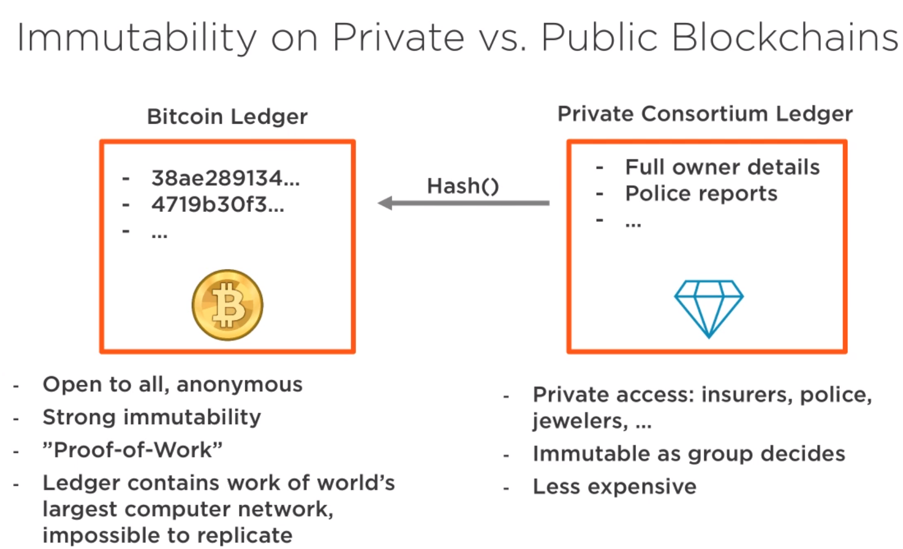

Cyber Security for Blockchain
Published: Jun 09, 2019 Tags: blockchain, security Category: ComputerScience
This year, I worked on a project and the topic for me is cyber security for blockchain in Oil and Gas industry. It was really good experience since I got the chance to think through this topic and deliver research report to client. Both cyber security and blockchain are interesting areas for me, besides the above project I still have a lot of things not mentioned mainly technical things. So I decide to write this blog as supplement to above project.
Table of Contents
Blockchain allows people to exchange assets and perform transactions without a third party. In order to compromise or hack a blockchain network, someone would have to gain control of the majority of computers in that network. This is extremely difficult to do which is guaranteed by Blockchain.
To simply say Blockchain is safe and can protect your data is wrong, since the strength of Blockchain can only cover security from one perspective.
The blockchain is an incorruptible digital ledger of economic transactions that can be programmed to record not just financial transactions but virtually everything of value Don and Alex Tapscott: Blockchain Revolution
Strength
There is no longer a single point of failure, and this is what makes blockchain infinitely more secure than what we have today. Blockchain isn't just for assets, though. It extends to contracts.
And also, along with that, understand that we only have two possible operations on blockchain: we can only read data and we can only add new data. There's no concept of an edit or delete, and this is what we talk about when we talk about immutability on the blockchain.
A block cannot be forged or modified, because it is digitally signed by the creator. The creator of a block is either publicly known (Proof of Stake) or difficult to become (Proof of Work), making masquerading as the real creator difficult or impossible.
Blockchain Platform Status
private blockchain, and the most common ones are R3 Corda, Hyperledger, and Quorum.
• Ethereum Ethereum currently does not have any advanced privacy options, but this is planned to change. • Hyperledger 1. Channels: Subsections of the blockchain that make transactions visible only to members. 2. Private Transactions: Hashes of private data are stored to publicly verify it on the blockchain. 3. Zero-Knowledge Technology: Provers can demonstrate knowledge of a secret without revealing the secret itself. • Corda Parties on the Corda Network can be represented in one of two ways: Party: A public key and name Anonymous Party: Only a public key.
Ethereum currently uses Proof of Work for consensus. And Casper is the planned migration of Ethereum from Proof of Work to Proof of Stake.
Azure, blockchain as service
TEEs (Trusted Execution Environments)
Hyperledger
Microsoft Coco Framework
R3 Corda (finance and bank)
JP Morgan Quorum
Ethereum vs Hyperledger The use of public keys for identity management is a logical choice since knowledge of a public key is necessary for verification of digital signatures. Both Ethereum and Hyperledger Fabric use digital signatures on transactions and blocks to verify the identity of the creator and that the signed data has not been modified since signing. Public key cryptography is used in the blockchain as a method for managing users’ identities without revealing real world identities. In Ethereum, users are identified by an address that is directly related to the user's public key. This provides identity verification while preserving anonymity. In Hyperledger Fabric, users are identified via X.509 certificates. These certificates provide several pieces of information about the user, but one of these is also the user's public key. Zero-knowledge proofs are a cryptographic principle used in some blockchains to increase the privacy of users. Currently, Ethereum does not have support for zero-knowledge proofs, but adding the necessary functionality for zkSNARKS, a type of zero-knowledge proof, is currently included in the Ethereum development roadmap. Hyperledger Fabric does not currently support zero-knowledge proofs as a privacy feature.

Hash functions are at the core of all blockchain technology. One of the primary uses for hash functions is chaining blocks together. In both Ethereum and Hyperledger Fabric, blocks include the hash of the previous block to tie the blockchain into a cohesive whole. Merkle trees are a data structure that allows authenticated storage with efficient data retrieval. Both Ethereum and Hyperledger Fabric are smart contract platforms that use a particular type of Merkle tree called the Patricia tree to store the current state of their virtual machine. Hash functions are used as the cryptographic puzzle at the center of the Proof of Work consensus algorithm. Ethereum currently uses Proof of Work for consensus, though a switch to Proof of Stake has been built into the road map from the beginning. There are only two consensus alogrithms implemented in Hyperledger Fabric - Solo and Kafka. SOLO is for development and Kafka is for production.

Security Roles in Blockchain
Ethereum Wallets - Do not store any money - Stores cryptographic keys -> key store - Multiple implementations
○ Cli ○ Desktop ○ Browser ○ Mobile app
Ethereum Accounts - Bank account
Issued by a bank Used for payments Can be restored by a bank Can be suspended by a bank - Ethereum account Can be created by any user at any time Can be used to access Ethereum apps Cannot be restored if access is lost Cannot be suspended or censored
Identity So, when you're thinking in your head about public versus private blockchain understand that it all begins with identity management, and in a private blockchain I know who all the participants are right from the beginning. In the public blockchain, again, I don't know who those participants are, and that's not to say that I can't build a permission solution on a public platform,
consensus https://blog.csdn.net/lsttoy/article/details/61624287
The blockchain is built of several different types of components, each with a specific role to play within the blockchain’s operation:
Ledger: A distributed, immutable historical record Peer Network: Stores, updates, and maintains the ledger Membership Services: User authentication, authorization, and identity management Smart Contract: Program that runs on the blockchain Wallet: Stores users' credentials Events: Notifications of updates and actions on the blockchain Systems Management: Component creation, modification, and monitoring Systems Integration: Integration of blockchain with external systems.
Potential Problems
https://brokenlibrarian.org/bitcoin/
Double spending Sending a digital copy concept it's not so great when it comes to things like money, stocks and bonds, music, loyalty points, intellectual property, tickets to a game or concert.
Solutions
Can use Azure KeyVault to store the key and do block versioning



Do you need a blockchain?
Do you need a shared database between multiple parties Do the parties have conflicting interests or are not trusted Can everyone play by the same rules? Do you need an immutable log? Public blockchain or private blockchain

Bitcoin uses Merkle tree while Ethereum use Patrica tree Ethereum moves to proof of stake: Casper
Ethereum code is public: Can be examined Can be validated Can be exploited if poorly written, e.g. the DAO
Dapp advantages Reduces fees Reduces reliance on central resource DDoS free Removes personal trust from the transaction